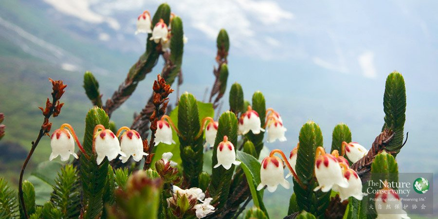

概述

岩须®TNC
保护计划书其实就是“商业计划书”在NGO领域的应用。在生态保护领域，保护计划书的主要作用是来描述一个项目的核心组成部分。保护计划书可以帮助保护工作者更加有效地沟通。对外，可以方便捐资人和合作伙伴迅速了解项目的重点；对内，可以加深不同项目的项目经理，同一团队的不同成员对某个项目的理解。
在TNC，一份保护计划书通常包括以下内容：生态区评估（Eco-regional Assessment，ERA）, 保护行动规划（Conservation Action Plan，CAP），勾画成果链，以及策略有效性评估。简而言之，保护计划书将向受众展示，如何具体执行既定的保护策略同时预估可能产生的保护成果。
一份优秀的保护计划书，至少需要包括以下四个关键点：
１.变革理论：用合适的方式，说明项目中期目标，以及达成预设目标所需前提；
２.定位：描述战略实施的步骤，回顾以往成功的案例，以强调团队具备实施成功战略的能力；
３.能力：描述团队成员的资历及专业背景，同时强调完成项目所需的当前成员不具备的能力，并给出解决方案；注意明确合作伙伴的权责及其对项目的影响；
４.财务：描述项目从启动到完成所需的所有费用，同时体现配套的筹款计划；对于短期项目支出需提供明细；